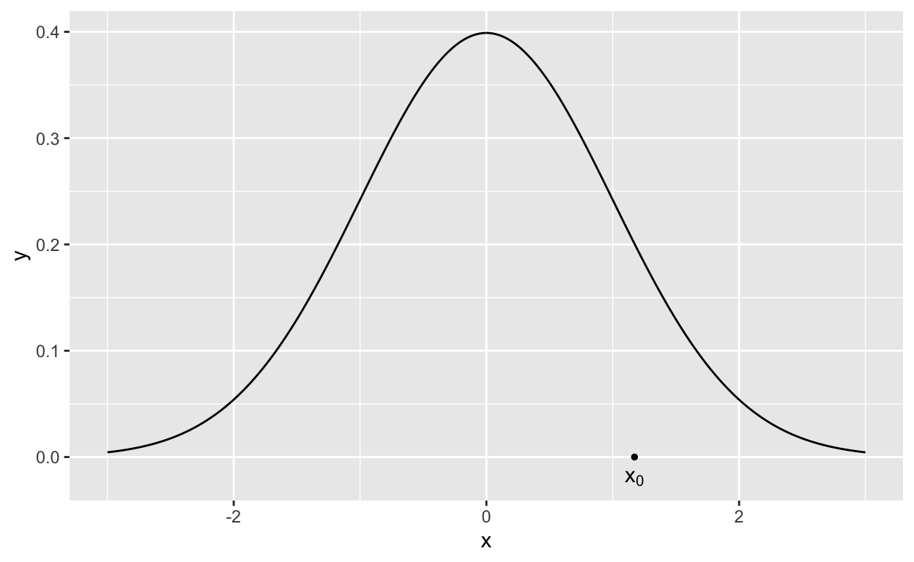

Experiment escorts us last -
His pungent company
Will not allow an Axiom
An Opportunity
— Emily Dickinson1
Recap: Bayesian computation
So far we have worked with priors (mostly conjugate) and likelihoods that result in analytically tractable2 posterior distributions and related quantities. In almost all cases, we can state the posterior distribution up to a proportional constant. What is missing is the normalising constant. Whilst it is only a constant, without it we can’t compute many basic posterior properties analytically, for example the mean or variance.
Where does this leave us? Whilst the exact mean and variance (among other quantities) are out of reach analytically, there are a number of methods that can simulate from a posterior distribution using only the posterior density up to a constant. If we can simulate from the posterior distribution, then we can approximate the quantities using Monte Carlo methods3 or simulation.
The Ratio of Uniforms
The ratio of uniforms method offers a distinct advantage over other methods based on rejection sampling that require a specified candidate distribution. Like any rejection based method, there is some acceptance rate less than one that can hamper the efficiency of the sampling scheme.
The Ratio of Uniforms Algorithm:
Generate the pair \((u_1,u_2)\) as a random sample from the rectangle enclosing the area \[ 0\leq u_1\leq\sqrt{h(u_1/u_2)} \]
If \[ 0\leq u_1\leq\sqrt{h(u_1/u_2)} \] let \(x=u_1/u_2\) otherwise reject the sample \(x=u_1/u_2\).
Slice Sampling
A second methods demonstrated here is the slice sampler. Slice sampling is a Markov Chain Monte Carlo Scheme that can prove more efficient than the Metropolis-Hastings algorithm, and only requires knowing the target density up to its proportionality constant.
The Slice Sampler:
The basic algorithm for the slice sampler is simple, but you will quickly see that it can get complicated in actual implementation. For a target density \(g(x)\) we can generate \(T\) draws from \(g\) as follows:
- Choose and initial value for \(x\), \(x_0\) from the domain of \(g\).
 2. For \(t=0,\ldots, T\) generate a random value \(y\), \(y\sim U(0,g(x_t))\)
- Draw a horizontal line from \(y\) across the density \(g\)
Draw \(x_{t+1}\) a uniform random sample on the horizontal line bounded by \(g\).
Return to Step 2 and repeat until \(t=T\).
The resulting samples \(x_0,x_1,\ldots,x_T\sim g(x)\).
The Hit and Run Sampler
The Hit and Run sampler is a variation on the random walk Metropolis-Hastings algorithm that reduces the problem of identifying a good high-dimensional candidate distribution by taking steps of random direction and size in the target density domain. Once the random direction is selected, the Metropolis-Hastings algorithm is applied to the step size, requiring only a viable candidate distribution in one dimension.
The Hit and Run Sampler
To draw a sample from a target distribution for a random vector \(\mathbf{\theta}\in\mathbf{\Theta}\) of length \(m\). At time step \(t\):
Generate a random vector \(\mathbf{r}\) of length \(m\) from some distribution such that \(\mathbf{r}\in\mathbf{\Theta}\) in and \(||\mathbf{r}||=1\), e.g. if \(\mathbf{\Theta} = \mathbb{R}^m\) then draw \(\mathbf{r}\) from a unit hyper-sphere of dimension \(m\).
Generate \(\lambda>0\) from some probability distribution and
Let \(\mathbf{\theta}^{(t+1)}=\mathbf{\theta}^{(t)}+\lambda\mathbf{r}\) with probability \[ \alpha=\min\left(1,\frac{f(\mathbf{y}|\mathbf{\theta}^{(t)}+\lambda\mathbf{r})\pi(\mathbf{\theta}^{(t)}+\lambda\mathbf{r})}{f(\mathbf{y}|\mathbf{\theta}^{(t)})\pi(\mathbf{\theta}^{(t)})}\right). \]
Practical questions
Question 1
Given data from a Poisson likelihood \[ f(\mathbf{y}|\lambda)=\frac{\lambda^{\sum_{i=1}^ny_i}e^{-n\lambda}}{\prod_{i=1}^ny_i!} \] consider the prior \[ \pi(\lambda)=\frac{1}{(\lambda+1)^2} \] Given some data
\(y=\) 1, 5, 1, 0, 7, 5, 3, 2, 1, 8 implement a ratio of uniforms sampling scheme to draw 1000 samples from the posterior \[ \pi(\lambda|\mathbf{y})\propto f(\mathbf{y}|\lambda)\pi(\lambda) \] Compare the posterior mean of \(\lambda\) to the MLE \(\hat{\lambda}\).
Given data from a Poisson likelihood \[ f(\mathbf{y}|\lambda)=\frac{\lambda^{\sum_{i=1}^ny_i}e^{-n\lambda}}{\prod_{i=1}^ny_i!} \] consider the prior \[ \pi(\lambda)=\frac{1}{(\lambda+1)^2} \] Given some data
\(y=\) 5, 1, 5, 1, 0, 7, 5, 3, 2, 1 implement a ratio of uniforms sampling scheme to draw 1000 samples from the posterior \[ \pi(\lambda|\mathbf{y})\propto f(\mathbf{y}|\lambda)\pi(\lambda) \] Compare the posterior mean of \(\lambda\) to the MLE \(\hat{\lambda}\).
Solution
y<-c(5,1,5,1,0,7,5,3,2,1)
n<-10
## We are going to numerically find the limits for the uniform samples
## Define the function sqrt(h(x)) to find b
h_b<-function(x)
{
a<-dpois(y,x,log = TRUE)%>%sum()-2*log(x+1)
exp(a/2)
}
## Define function xsqrt(h(x)) to find c and d
h_d<-function(x)
{
a<-dpois(y,x,log = TRUE)%>%sum()-2*log(x+1)
x*exp(a/2)
}
## Use optimise to find b,c, and d
b<-optimise(h_b,c(0,10),maximum = TRUE)$objective
c<-optimise(h_d,c(0,10))$objective
d<-optimise(h_d,c(0,10),maximum = TRUE)$objective
## Set number of samples desired
N<-1000
## Declare an empty vector of undetermined length to store samples
## This is not the most efficient way to do this, but it does work
lambda<-numeric()
## Define a while loop to accept or reject samples of u2/u1 as being from the target density
## There are other ways to do this that might be more efficient
while(length(lambda)<1001)
{
u1<-runif(1,0,b)
u2<-runif(1,c,d)
if(u1<h_b(u2/u1))
{
lambda<-c(lambda,u2/u1) ## If the acceptance criteria are met add u2/u1 to the vector lambda
}
else ## if the acceptance conditions are not met do nothing
{
lambda<-lambda
}
}
## Plot the results
ggplot(data = tibble(lambda))+
geom_histogram(aes(x=lambda, y = ..density..),binwidth = 0.1)
## Compare the posterior mean to the MLE
mean(lambda)
#> [1] 2.958506
mean(y)
#> [1] 3Question 2
Given data from a Poisson likelihood \[ f(\mathbf{y}|\lambda)=\frac{\lambda^{\sum_{i=1}^ny_i}e^{-n\lambda}}{\prod_{i=1}^ny_i!} \] consider the prior \[ \pi(\lambda)=\frac{1}{(\lambda+1)^2} \] Given some data
\(y=\) 2, 6, 3, 1, 6, 6, 0, 7, 3, 4 implement a slice sampler scheme to draw 1000 samples from the posterior \[ \pi(\lambda|\mathbf{y})\propto f(\mathbf{y}|\lambda)\pi(\lambda) \] Compare the posterior mean of \(\lambda\) to the MLE \(\hat{\lambda}\).
Given data from a Poisson likelihood \[ f(\mathbf{y}|\lambda)=\frac{\lambda^{\sum_{i=1}^ny_i}e^{-n\lambda}}{\prod_{i=1}^ny_i!} \] consider the prior \[ \pi(\lambda)=\frac{1}{(\lambda+1)^2} \] Given some data
\(y=\) 5, 1, 5, 1, 0, 7, 5, 3, 2, 1 implement a ratio of uniforms sampling scheme to draw 1000 samples from the posterior \[ \pi(\lambda|\mathbf{y})\propto f(\mathbf{y}|\lambda)\pi(\lambda) \] Compare the posterior mean of \(\lambda\) to the MLE \(\hat{\lambda}\).
Solution
## Load the library rootSolve to find the end points for the new sample x
library(rootSolve)
#>
#> Attaching package: 'rootSolve'
#> The following objects are masked from 'package:pracma':
#>
#> gradient, hessian
## This sets the seed for the random number generator, this makes sure that each time you run the ## simulation you get the same results. The seed can be any arbitrary number
set.seed(14061972)
## Enter the data
y<-c(5,1,5,1,0,7,5,3,2,1)
n<-10
## The posterior computed up to the proportionality constant
g<-function(x)
{
a<-sum(y)*log(x)-n*x-2*log(x+1)
exp(a)
}
## Set number of desired samples
N<-1000
## Define lambda as an empty vector of size N
lambda<-numeric(length = N)
## We generate the initial value for lambda, it can be drawn from the prior or any distribution
## with the same support.
lambda[1]<-rexp(1)
## Start the slice sampler
for( i in 2:N)
{
## sample y0 on the vertical slice between the minimum of g and g(x0)
y0<-runif(1,0,g(lambda[i-1]))
## Use the uniroot.all function to find the points where g(x)==y0, we are setting some
## arbitrary limits of 0 and 10 for the solver. Note that there are alternatives that are probably more robust than this. I used uniroot.all() for brevity
ab<-uniroot.all(function(x) g(x)-y0,c(0,10))
## Sample new lambda uniformly on horizontal slice between the endpoints where
## g(x)==y0
lambda[i]<-runif(1,ab[1],ab[2])
}
## Plot the results
ggplot(data = tibble(lambda))+
geom_histogram(aes(x=lambda, y = ..density..),binwidth = 0.1)
mean(lambda)
#> [1] 2.938316
mean(y)
#> [1] 3Question 3
Given data from the OLS model \[ f(\mathbf{y}|\beta_0,\beta_1)=\left(\frac{1}{2\pi\sigma^2}\right)^{n/2}\exp\left(-\frac{\sum_{i=1}^n(y_i-\beta_0-\beta_1x_i)^2}{2}\right) \] for the priors \[ \begin{align} \pi(\beta_0,\beta_1)&\propto 1 \end{align} \] Given some data
\(x=\) -0.35, 1.55, -0.77, 1.16, 2.07, 1.46, -2.65, 2.42, 2.91, 2.3, 0.95, -1.35, -2.19, -1.2, 2.48 \(y=\) 4.71, -8.73, 5.36, -5.29, -10.37, -8.72, 17.69, -15.6, -16.48, -11.27, -5.07, 11.64, 15.13, 8.29, -13.09 implement a hit and run sampler scheme to draw 1000 samples from the posterior \[ \pi(\beta_0,\beta_1|\mathbf{y})\propto f(\mathbf{y}|\beta_0,\beta_1)\pi(\beta_0,\beta_1). \]
Given data from the OLS model \[ f(\mathbf{y}|\beta_0,\beta_1)=\left(\frac{1}{2\pi\sigma^2}\right)^{n/2}\exp\left(-\frac{\sum_{i=1}^n(y_i-\beta_0-\beta_1x_i)^2}{2}\right) \] for the priors \[ \begin{align} \pi(\beta_0,\beta_1)&\propto 1 \end{align} \] Given some data
\(x=\) 1.76, -2.02, 2.1, -2.59, -2.98, 2.75, 1.7, -0.11, -1.7, -2.22, 2.95, -2.43, -2.37, 1.52, 0.28 \(y=\) -2.23, 5.71, -2.27, 6.42, 8.14, -4.16, -3.43, 2.24, 4.32, 7.64, -5.38, 6.25, 5.86, -0.54, 1.99 implement a hit and run sampler scheme to draw 1000 samples from the posterior \[ \pi(\beta_0,\beta_1|\mathbf{y})\propto f(\mathbf{y}|\beta_0,\beta_1)\pi(\beta_0,\beta_1). \]
Solution:
## Enter the data for y and x
y<-c(-2.23,5.71,-2.27,6.42,8.14,-4.16,-3.43,2.24,4.32,7.64,-5.38,6.25,5.86,-0.54,1.99)
x<-c(1.76,-2.02,2.10,-2.59,-2.98,2.75,1.70,-0.11,-1.70,-2.22,2.95,-2.43,-2.37,1.52,0.28)
## Set the desired number of samples
N<-10000
## Create matix to store values for beta_0 and beta_1, and set the initial values.
beta<-matrix(0,nrow = N, ncol = 2)
beta[1,]<-c(1,-2)
## Define the function proportional to the posterior density
f<-function(pars)
{
m<-pars[1]+pars[2]*x
dnorm(y,mean=m,sd=1,log=TRUE)%>%sum()
}
## Start the iterations
for(i in 2:N)
{
## Sample a random vector in R^2
r<-rnorm(2)
## Normalise the vector so that ||r||=1
r<-r/sqrt(sum(r^2))
## Take step of some random size
l<-rexp(1,0.2)
## Compute the value for the target density evaluated at the new proposed location (the step
## away from the current location).
fc<-f(beta[i-1,]+l*r)
## generate u~U(0,1)
u<-runif(1)
## Compute the acceptance probability
alpha<-exp(fc-f(beta[i-1,]))
## if u<alpha accept the new valuem, else do nothing
if(u<alpha)
{
beta[i,]<-beta[i-1]+l*r
}
else
{
beta[i,]<-beta[i-1,]
}
}
df<-tibble(pars=c(beta[,1],beta[,2]),names=c(rep("beta[0]",N),rep("beta[1]",N)),iteration=rep(1:N,2))
ggplot(df)+
geom_point(aes(x=iteration,y=pars))+
facet_wrap(~names,labeller = label_parsed)ggplot(df)+
geom_histogram(aes(x=pars,y=..density..))+
facet_wrap(~names,labeller = label_parsed)
#> `stat_bin()` using `bins = 30`. Pick better value with `binwidth`.